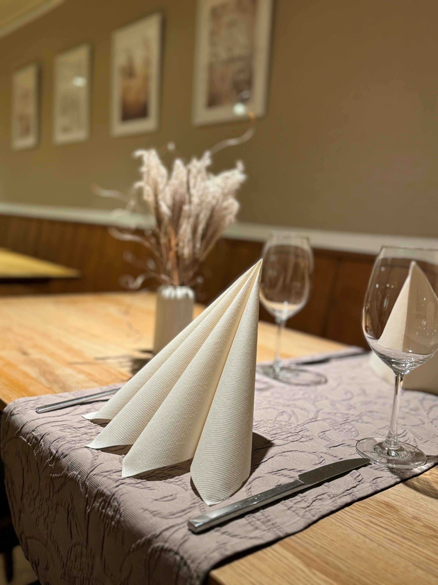
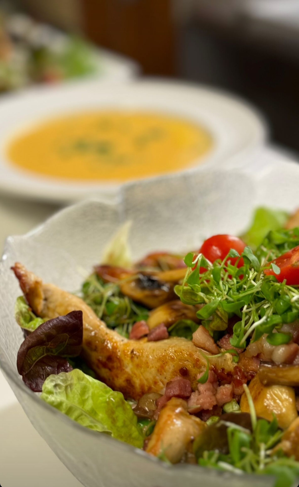
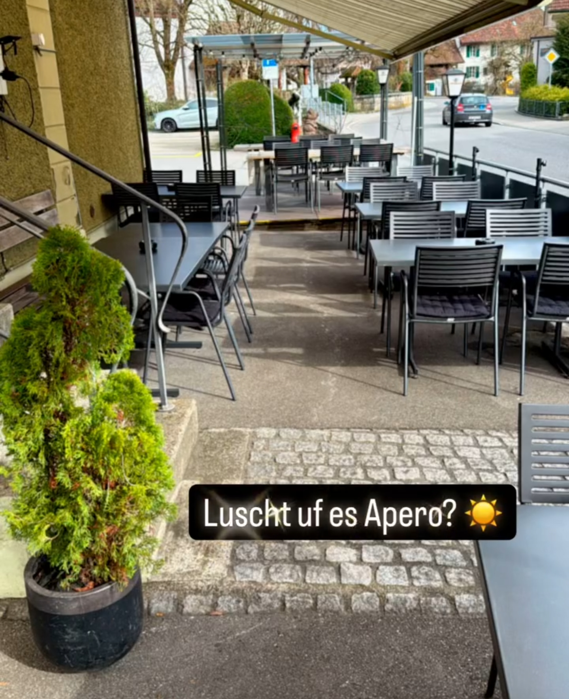

Liebe Gäste der Sonne
Das Team der Sonne mit Sultan Bal freuen sich, Sie im Restaurant unter neuer Führung begrüssen zu dürfen.
Neben bewährten Klassikern haben wir das Angebot angereichert, erweitert und bieten unter anderem genussvolle Frühstücksklassiker sowie Köstlichkeiten aus der Schweizer Küche, wie zum Beispiel das Poulet im Chörbli an. Für unsere kleinen Gäste gibt es eine eigene Kinderecke und ein spezielles Angebot, das den Familienbesuch noch angenehmer macht.
Wir laden Sie ein, gemeinsam mit uns das Restaurant Sonne in neuem Glanz zu erleben und freuen uns darauf, Sie bald bei uns begrüssen zu dürfen!
Lasst euch überraschen, wir freuen uns!
Das Team der Sonne und Sultan Bal
Speisekarten
Einblicke



Kontakt
Restaurant SonneHauptstrasse 29, 5742 Kölliken
info@sonne-kölliken.ch
+41 62 723 19 15
Sultan Bal, Geschäftsführerin
Öffnungszeiten
| Montag | Ruhetag |
|---|---|
| Dienstag | Ruhetag |
| Mittwoch | 08:30 – 13:45 • 17:30 – 22:00 |
| Donnerstag | 08:30 – 13:45 • 17:30 – 22:00 |
| Freitag | 08:30 – 13:45 • 17:30 – 23:00 |
| Samstag | 17:30 – 23:00 |
| Sonntag | 09:00 – 13:45 • 17:30 – 21:00 |